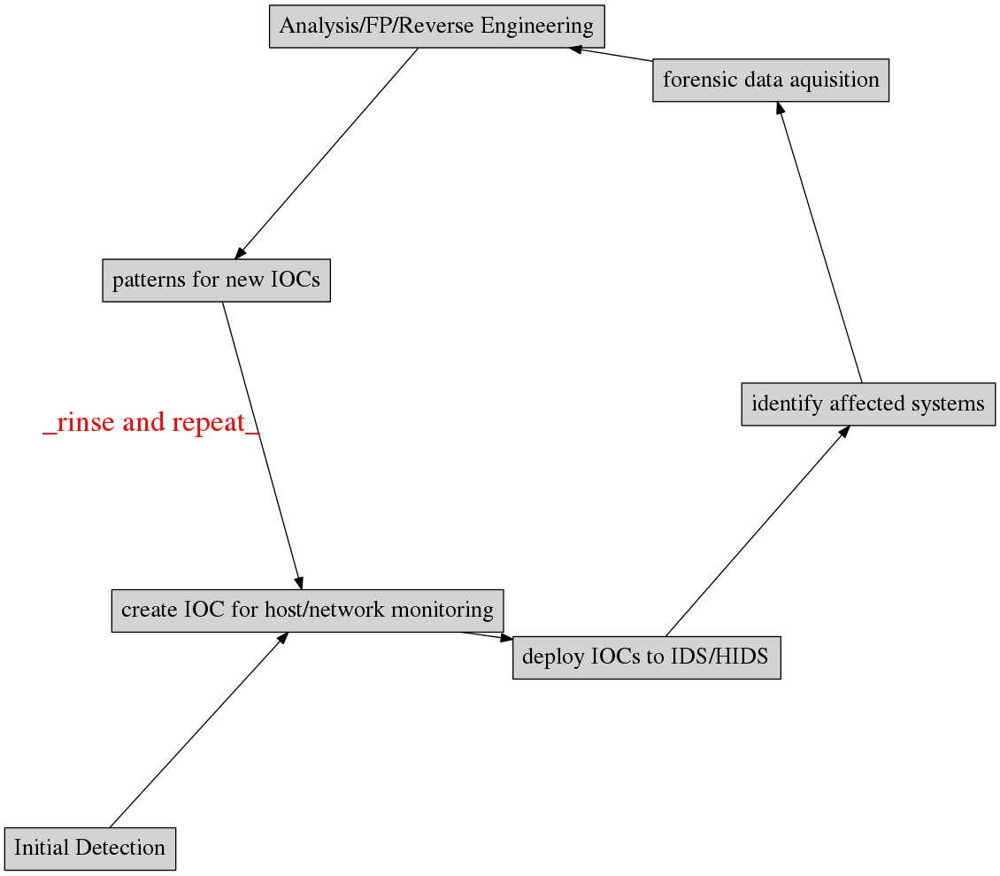

Indicators of Compromise
Indicator of compromise (IOC) in computer forensics is an artifact observed on network or in operating system that with high confidence indicates a computer intrusion.
A typical flow with Indicators of Compromise allows to integrate dynamic threat intelligence into detection process:
source: Sophisticated indicators for the modern threat landscape, 2012 paper
OpenIOC - Mandiant-backed effort for unform representation of IOC (now FireEye) http://www.openioc.org/
Mitre CybOX: http://cybox.mitre.org/ https://github.com/CybOXProject/Tools https://github.com/CybOXProject/openioc-to-cybox Mitre CAPEC: http://capec.mitre.org/ Mitre STIX: http://stix.mitre.org/ Mitre TAXII http://taxii.mitre.org/
OpenIOC manipulation https://github.com/STIXProject/openioc-to-stix https://github.com/tklane/openiocscripts
Mantis Threat Intelligence Framework https://github.com/siemens/django-mantis.git Mantis supports STIX/CybOX/IODEF/OpenIOC etc via importers: https://github.com/siemens/django-mantis-openioc-importer
Search splunk data for IOC indicators: https://github.com/technoskald/splunk-search
Our framework: http://github.com/fygrave/iocmap/
Policies on sharing IOCs:
Why we need IOCs? because it makes it easier to systematically describe knowledge about breaches.
All networks are compromised
The difference between a good security team and a bad security team is that with a bad security team you will never know that you've been compromised.
A Network compromise case study:
So what are the compromise indicators here?
\tiny
File Name : RasTls.exe File Size : 105 kB File Modification Date/Time : 2009:02:09 19:42:05+08:00 File Type : Win32 EXE MIME Type : application/octet-stream Machine Type : Intel 386 or later, and compatibles Time Stamp : 2009:02:02 13:38:37+08:00 PE Type : PE32 Linker Version : 8.0 Code Size : 49152 Initialized Data Size : 57344 Uninitialized Data Size : 0 Entry Point : 0x3d76 OS Version : 4.0 Image Version : 0.0 Subsystem Version : 4.0 Subsystem : Windows GUI File Version Number : 11.0.4010.7 Product Version Number : 11.0.4010.7 File OS : Windows NT 32-bit Object File Type : Executable application Language Code : English (U.S.) Character Set : Windows, Latin1 Company Name : Symantec Corporation File Description : Symantec 802.1x Supplicant File Version : 11.0.4010.7 Internal Name : dot1xtray
\normalsize
RasTls.DLL RasTls.DLL.msc RasTls.exe
http://msdn.microsoft.com/en-us/library/ms682586(v=VS.85).aspx
Dynamic-Link Library Search Order
# tagger.so # provides ability to import text files with IP and/or hostnames # into a sensor that would cause autotagging of all matching sessions plugins=tagger.so taggerIpFiles=blacklist,tag,tag,tag... taggerDomainFiles=domainbasedblacklists, tag, tag, tag
ioc collection http://iocbucket.com
Public blacklists/trackers could also be used as source:
https://zeustracker.abuse.ch/blocklist.php?download=ipblocklist
https://zeustracker.abuse.ch/blocklist.php?download=domainblocklist
These platforms provide ability to mine traffic or patterns from the past based on IOC similarity
show me all the packets similar to this IOC
We implemented a whois service for IOC look-ups
whois -h ioc.host.com attribute:value+attribute:value
see IOC cycle we mentioned earlier
If event chain leads to compromise
http:// liapolasens[.]info/indexm.html http:// liapolasens[.]info/counter.php?t=f&v=win%2011,7,700,169&a=true http:// liapolasens[.]info/354RIcx http:// liapolasens[.]info/054RIcx
What to do?
rule susp_params_in_url_kind_of_fileless_bot_drive_by
{
meta:
date = "oct 2013"
description = "Landing hxxp://jdatastorelame.info/indexm.html 04.10.2013 13:14 108.62.112.84 "
description1 = " Java Sploit hxxp://jdatastorelame.info/054RIwj "
strings:
$string0 = "http"
$string1 = "indexm.html"
$string2 = "054RI"
condition:
all of them
}
# many plugX deployments connect to google DNS when not in use alert tcp !$DNS_SERVERS any -> 8.8.8.8 53 (msg:"APT possible PlugX Google DNS TCP port 53 connection attempt"; classtype:misc-activity; sid:500000112; rev:1;)
IOC management can be automated
every manager loves graphs :p
Or contact us at …